逐日流程（DAY 1～68）
贴吧「多娜多娜来一起做坏事吧」吧的 辉弥沙耶 在 2020-12-11 边打「百天通关」成就边记了一份流程，从 DAY 1 一路排到结局；次日又补更了特殊妹子的事件条件。本页把该帖的楼主楼层整理成一页：按天列出当天要达成什么、去哪张图、有什么风险，并保留原帖的路线截图。
⚠️ 不要照着天数抄。 作者自己写明了前提：这份流程省略了练级、刷好感、刷武器的过程，是给二周目打「百天通关」成就的人参考的（他还有三十天左右的余量）。一周目请按自己的节奏来——该练级就练级，有新地图就去拿徽章刷素材。
与另外两页的分工
| 页面 | 视角 | 用来查什么 |
|---|---|---|
| 本页 | 按天 | 照着玩：今天做什么、去哪张图、避开什么 |
| 章节不可逆节点与结局 | 按章 | 哪些动作不做就会锁结局 |
| 全话流程表（第 1～59 话） | 按话 | 每话的 ToDo 与完成后解锁的地图 |
三套编号互不相同（「天」≠「话」≠「章」），数字不能互相套用。
原帖的地图名用日文原名，与站内其他页面的中译名对照如下（都取自游戏内小地图标题框）：
| 原帖（日文） | 站内其他页面 |
|---|---|
| 仕山医院 | 仕山医疗所 |
| 芽生寮 | 芽生宿舍 |
| 情報工学科棟 | 信息工学楼 |
| アモル | 亚商城 |
| アンエピク | 昂埃皮克 |
| 造船所 | 造船厂 |
结局条件
原帖开头先把结局条件说明白。本作的结局分三层：
| 结局 | 条件 |
|---|---|
| 普通结局 | 不满足个人结局条件时的兜底结局 |
| 个人结局 | 该女主角【未发生坏结局事件】且【好感达到 7 级以上】 |
| 老板娘结局 | 【2000 万事件发生】且【所有女主角好感等级不高于 7】 |
- 判定节点：在第二个【ToDo：なし】完成时决定。要刷好感改结局，必须在这之前做完。
- 多位女主角同时达标时只会显示好感最高的那一位的结局，但成就不缺。
- 老板娘结局要求所有女主角好感都不高于 7 级——想刷的话要提前把每个人的好感压住。
基础数值与操作要点
原帖在 DAY 1 就把基础讲了一遍，这里先集中列出来，后面逐日只写当天要做的事。
| 数值 | 作用 |
|---|---|
| ルックス（容貌） | 接客时能否被选中的关键 |
| テクニック（技巧） | 影响收入 |
| メンタル（精神） | 相当于妹子的耐久。D 是最低档，到了 D 而且条空了就会崩溃；崩了之后即使另外两项再高，一次也只能赚百十块钱 |
其余要点：
- MP：MP 过低时虽然仍能使用技能，但伤害与属性会大幅降低，尽量维持在绿色 MP 条。
- 状态图标三档：绿色＝安全；黄色＝有几率怀孕；红色＝极大概率怀孕。怀孕之后接客属性下降得更多，不想的话就喂药保持绿色。
- 商店每天刷新：可以用自动存档 SL 来换商品。
- 仓库 → 人才：捕获过的妹子在【ガレージ】（仓库）里，点选之后才会收进【ジンザイ】（人才）开始接客；不收的话下一次行动会自动放生。
- 顾客的【インカム】：影响收入，越高给得越多。
- 特殊日子（原帖在 DAY 6 解释）：
| 日子 | 说明 |
|---|---|
| 谢恩日 | 顾客多、收入属性高，也会携带一些好词条（也不全是），适合接客 |
| 破碎日 | 顾客同样多，但大部分携带负面词条；也有顾客带魔性之类的极品词条，而且顾客收入普遍极高 |
| 商店大甩卖 | 没钱可以等这天再升级武器、升基建 |
破碎日还有一条实用技巧：抓个 ルックス（容貌）为 D 的妹子，专门用来挡掉不想接的客人。
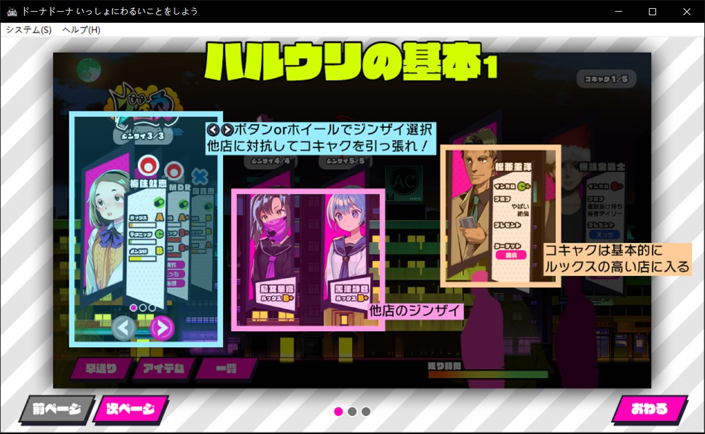
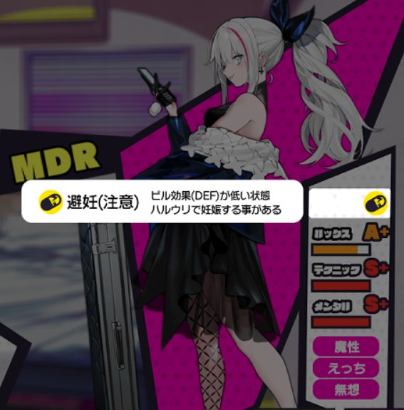
逐日流程
DAY 1
目标：选好人物加满好感，点【次へ】进接客教程。
注意下面的粉色【ToDo】，相当于主线任务，达成之后才能推进剧情。
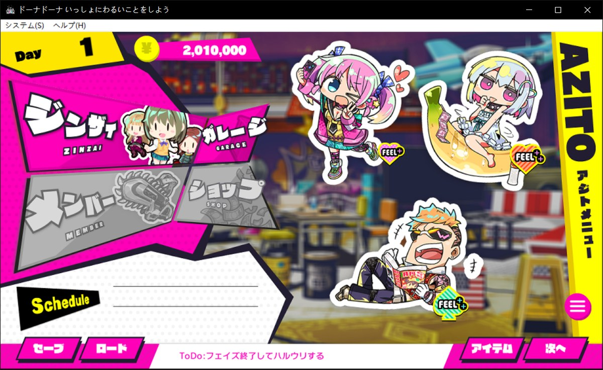
DAY 2
目标：还是教程，加完好感去掳人（ヒトカリ）。
- 地图整体走到红色感叹号处触发剧情；战斗部分原帖不做讲解。
- 最后击杀目标即完成捕获。
- 打完不用继续打，直接点右下角【撤収】退出（想继续打也行）。
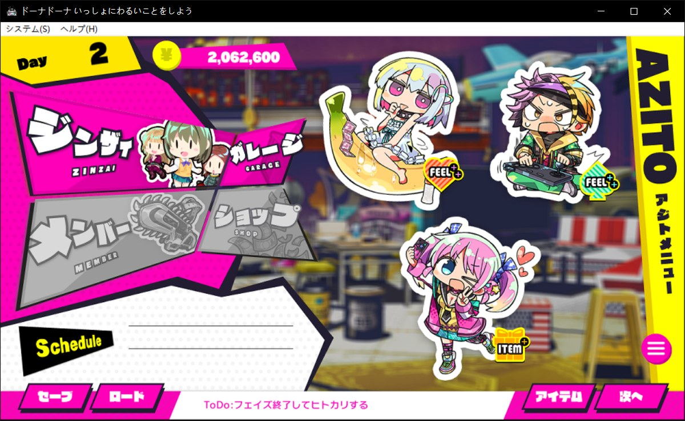
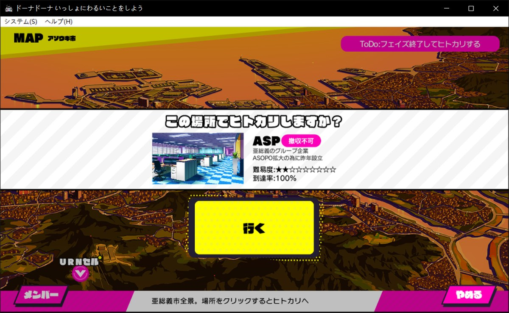
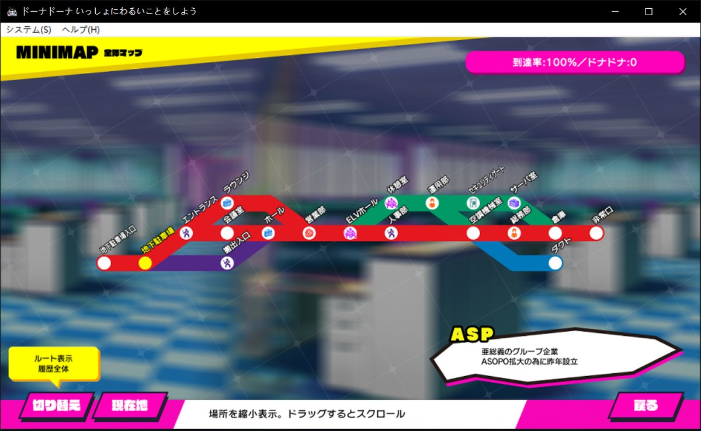
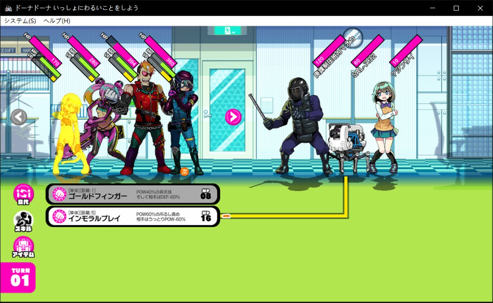
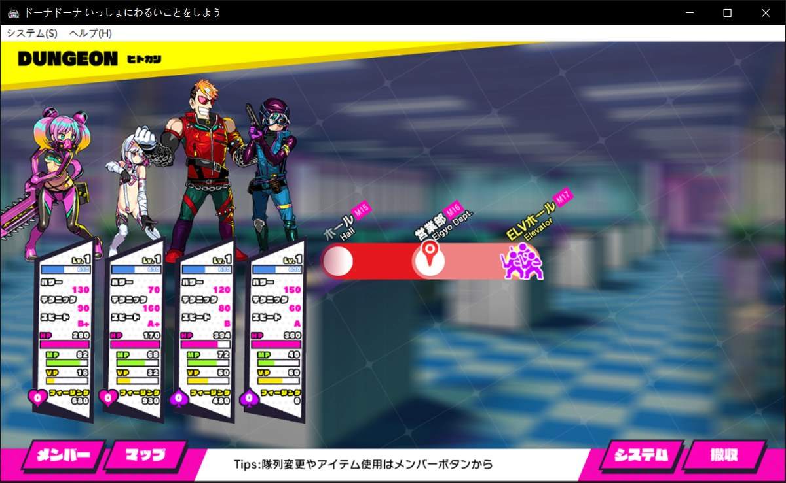
DAY 3
目标：【一天接客赚取 5,000 日元以上】
- 点【ショップ】进剧情，也就是商店；商店物品每天都会刷新，可以用自动存档 SL 更换商品。
- 有三件永久影响「对妹子使用道具效果」的商品，钱不多可以等刷到打折再买。
- 【ガレージ】（仓库）里是捕获过的妹子，点击之后会收进【ジンザイ】（人才）才能让其接客；不收的话下一次行动会自动放生。
- 客人的【インカム】属性也会影响收入，越高给得越多。
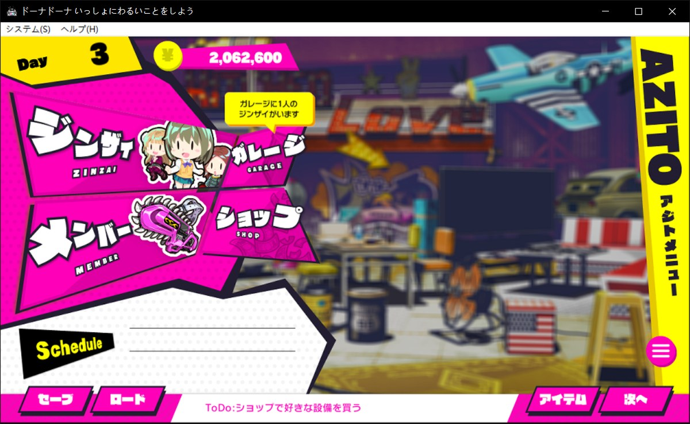
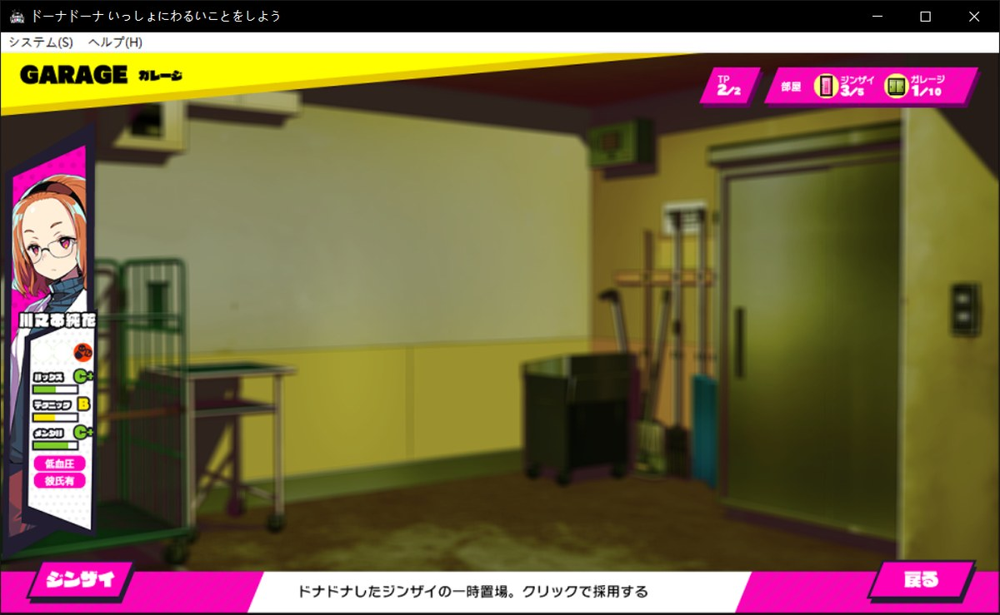
DAY 4
目标：【通关仕山医院】
速通选手可以选择今天 SL 抓个处女人材节省时间。
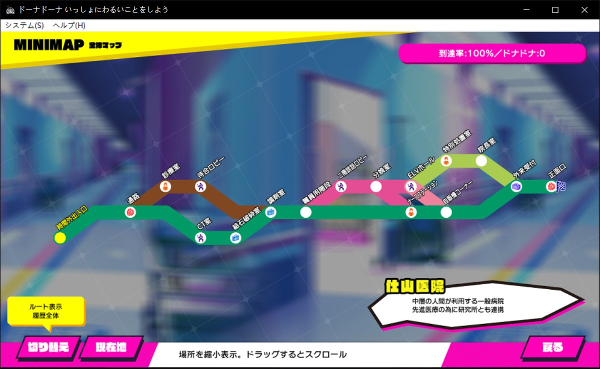
DAY 5
目标：【让处女人材接客】
去抓人材时可以顺便探探地图。商店里这两件是增加接客人数上限与行动次数的。
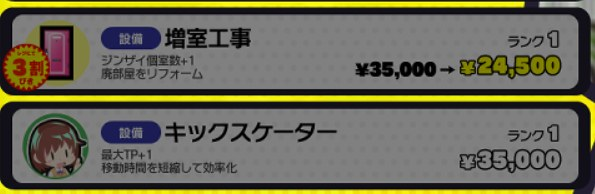
DAY 6
目标：【用素材在商店强化武器】
- 原帖在这一天解释了「谢恩日 / 破碎日」两种特殊日子，见上文。
- 去哪里刷素材：选面界面的サンホー工業。到大箱子图标那里，下面绿色安全门那条路暂时过不去。
- 素材出不出是随机的，出谁的也是随机的。初通可以在这里刷齐所有人的二阶素材，也可以后面的图再刷——素材刷新地点不限定。
- 通关之后会触发第一个特殊妹子的剧情；第二天在【めぐみ通り】的对应位置就能捕获。这种粉色妹子图标就是特殊妹子，特殊妹子有自己的事件剧情与 CG，完成指定条件即可。
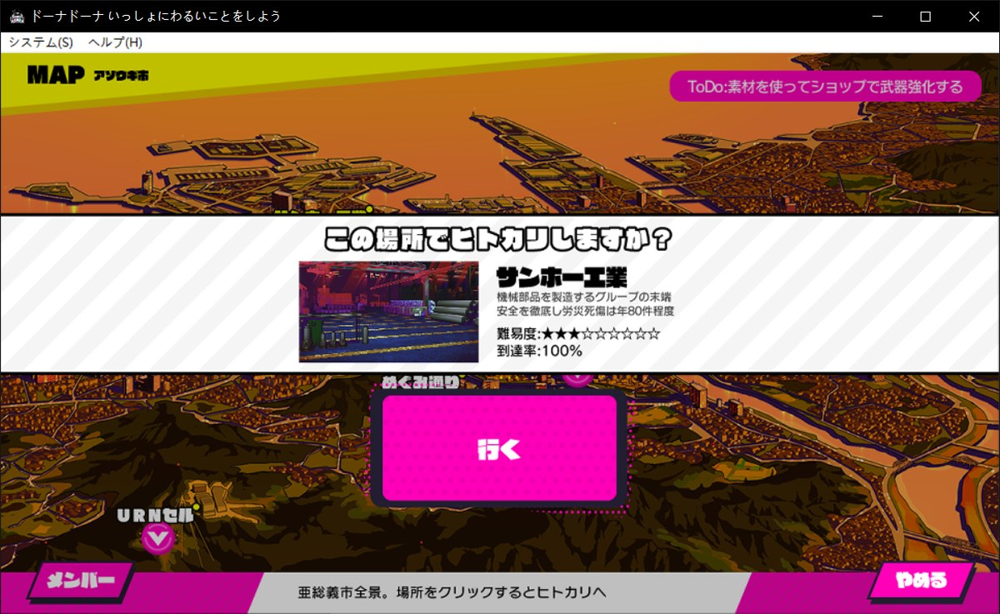
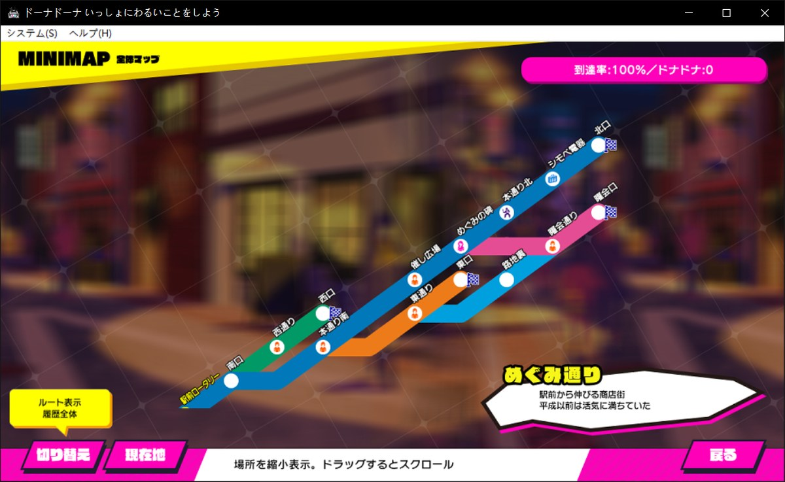
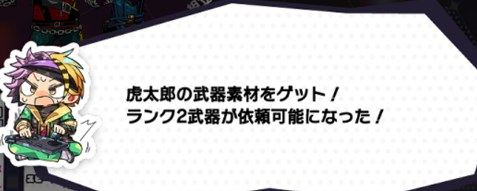
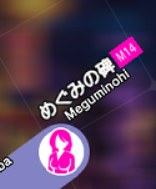
DAY 7
目标：去商店升级完武器后，主线目标会变成【一天接客赚 1 万以上】。
DAY 8
目标：【通关美术馆】
红感叹号处要打一场小 boss 战，两千多血；打完之后随便选个出口通关。
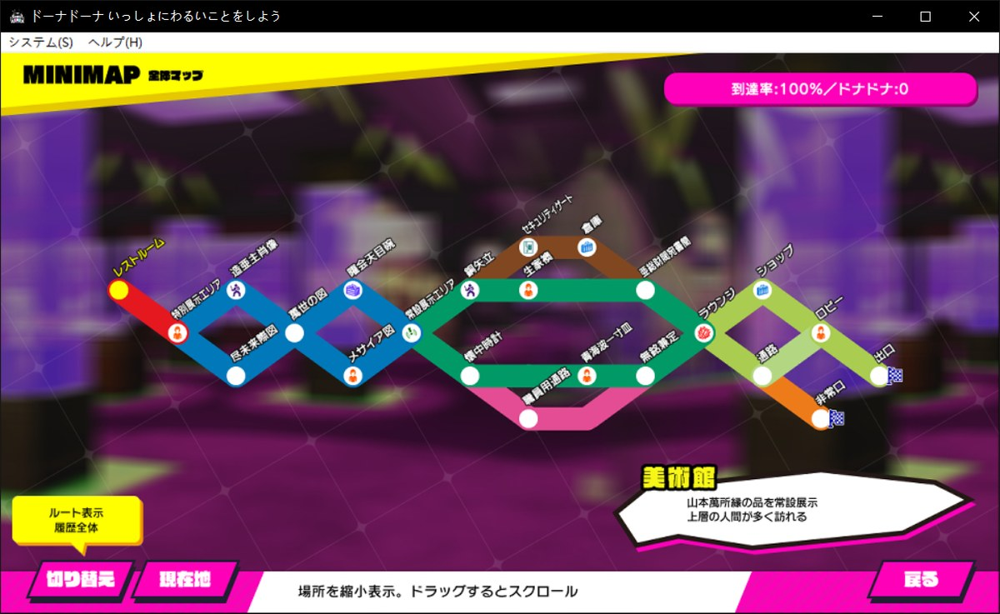
DAY 9 / 10 / 11
- DAY 9：【一天接客达两人以上】没什么说的。
- DAY 10：【通关芽生寮】。由于安全门开不了，走下面那条路会自动撤退。
- DAY 11：同前一天，这次门开了——从此地图上所有绿色安全门图标的地方都可以走了。红感叹号处有小 boss 战，六千血左右；打完走到尽头通关。
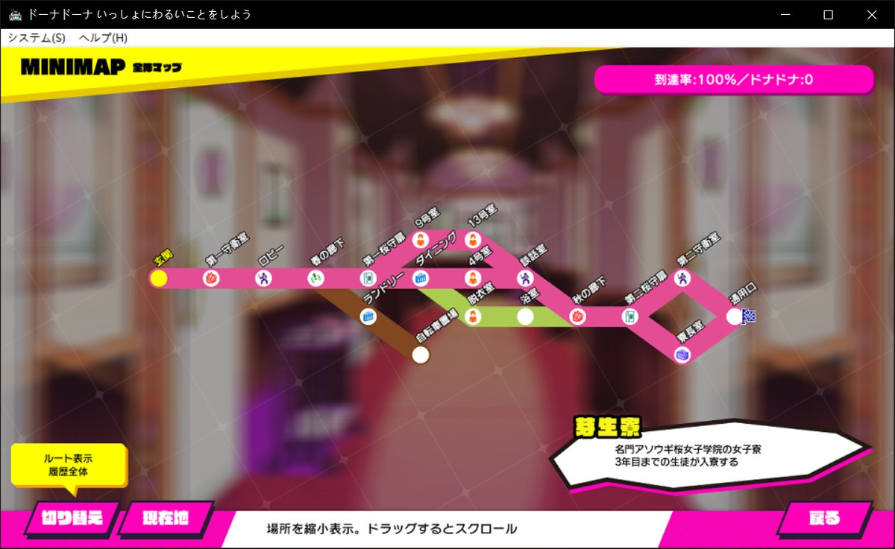
DAY 12
目标：【通关化学研究所】
- 这一天的意思是：今天去有 hot 标志的地方能抓到属性较好的妹子。
- 绕过第一个红感叹号（对自己实力有自信可以试试）。
- 第二个红感叹号有小 boss 战，五千多血。
- 终点还有一场 boss 战，一万五千血左右，有一定难度——注意队伍状态，打之前补血补蓝。
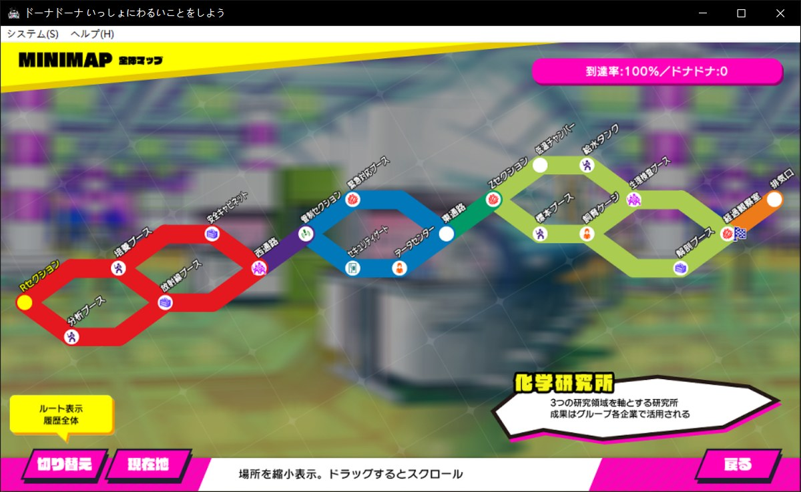
DAY 13 / 14
- DAY 13：【一天内接客赚 1.5 万以上】。
- DAY 14：【通关东云码头】。这关路途很长，注意补给；终点有小 boss 战，五千血。地图上咖啡色的路是 offline gate，暂时走不了。这关全员败北有战败 CG，收集的留意。
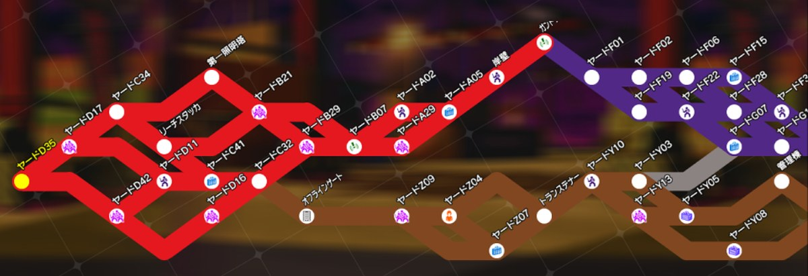
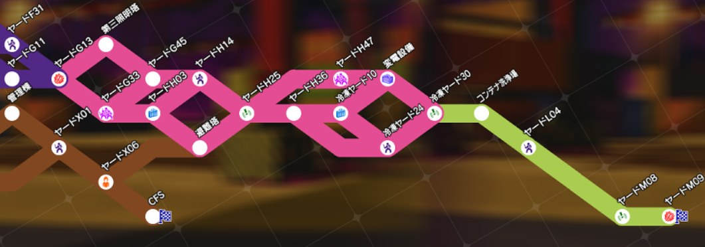
DAY 15 / 16 / 17
这一段是补楼内容，原帖用截图补出，本页转写如下。
- DAY 15：【去サンホー工業抓妹子】，ToDo 是
サンホー工業でジンザイをドナドナする。 - DAY 16：【一天接客赚 2 万以上】，ToDo 是
一日のハルウリで20,000円以上稼ぐ。 - DAY 17：【去商店】，然后主线会变成【派遣某个妹子】，ToDo 是
どれかジンザイをハケンする。
派遣的两条规则（原帖重点）：
- 左边是指定条件，不用全部符合，但符合得越多给的钱越多；符合两个条件以上才能赚到钱，单次最多 50 万左右。
- 派遣的人材会暂时从人才列表里消失，直到ハケン期日的第二天才会回来；最晚要在ハケン期日当天派遣。之前什么时候派都可以，但在规定时间之前必须派人，否则会扣一大笔钱。
DAY 18～22
原帖缺失（楼主被抽楼，补楼只补到 DAY 17 为止）。
DAY 23 / 24
- DAY 23（也就是ハケン期日的后一天）：【连续接客两个顾客】。
- DAY 24：【通关 YR精機跡】。只能走下面完成；红感叹号小 boss 战，1.1 万血左右。
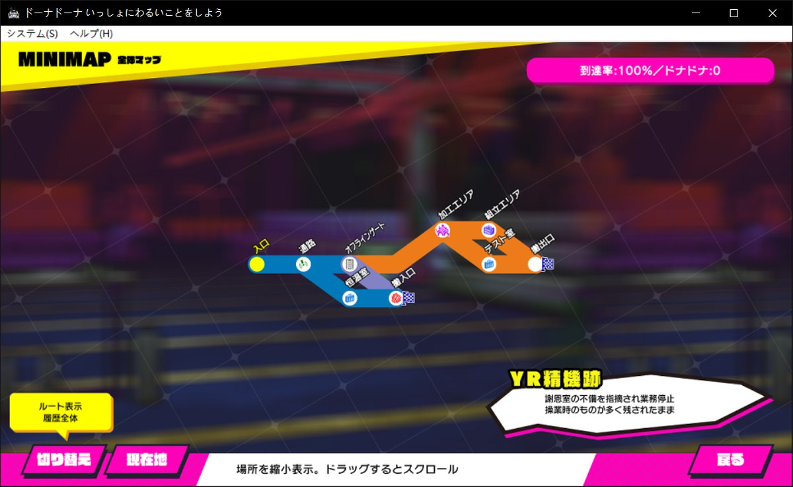
DAY 25 / 26 / 28
- DAY 25：【赚 2.5 万】。
- DAY 26：【一次派遣赚 5 万以上】——理论上只要满足两个条件就能达到。
- DAY 28（派遣回来那天）：【通关アモル】（商城）。注意：收集的第二天再去商场会遇到坏结局 CG，想避开的当天去。同时这里开始也可以刷到三阶武器素材。走到下面红感叹号处即可；走上面会有一场 boss 战（4 万血左右），准备好了再去也行。
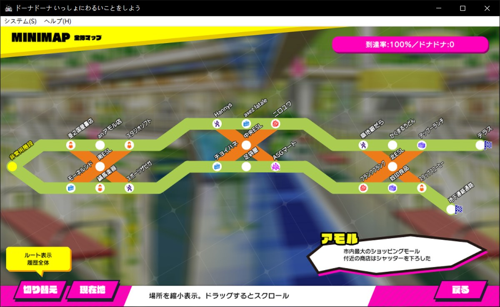
DAY 29 / 30
- DAY 29：先去【商店】，然后【通关情報工学科棟】。
- DAY 30：【通关仕山医院】。注：晚一天去可收 CG，想避开的当天去。地图前面有就不放了，两处红感叹号都是必经之处，有两场杂兵战；第二个红感叹号打完后去三层院长室。
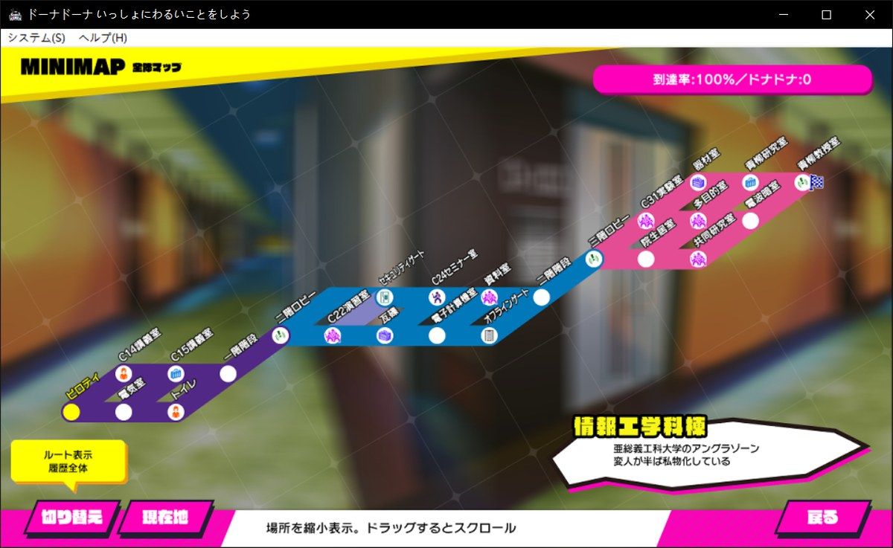
DAY 31 / 33 / 34
- DAY 31：去【商店】，然后【一次派遣赚 10 万】。这期间触发了第五个特殊妹子的，可以去商城抓。
- DAY 33：【一天接客三人】。
- DAY 34：【通关裏ジオ】。注意：第二天去即可收一张 CG，想避开的当天去。走到感叹号处即可。
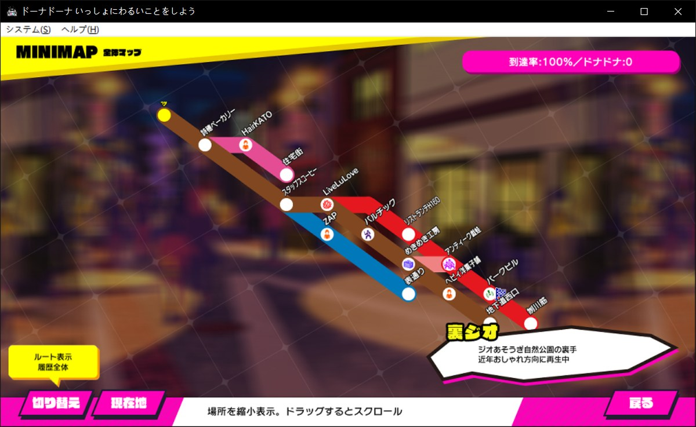
DAY 35
目标：【通关造船所】
注意：全灭可收战败 CG。这里开始可以刷 3 级素材。第一个红感叹号处有 boss 战，3 万血左右。
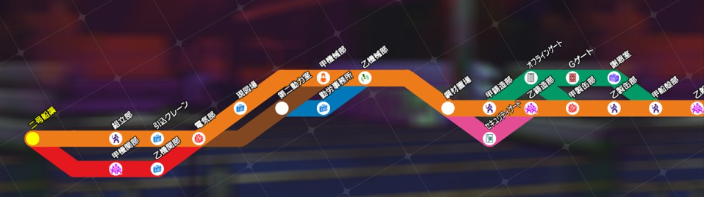
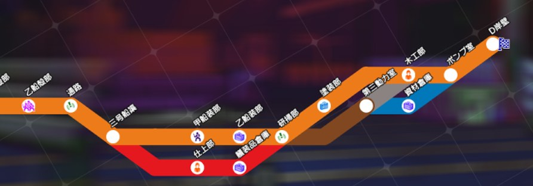
DAY 36 / 37 / 38
- DAY 36：【日入 3 万】。
- DAY 37：【连续接客 3 人】。
- DAY 38：【去商店】然后【通关第三学校】。注意：晚一天去可收 CG，想避开的当天去；同时全灭有战败 CG。
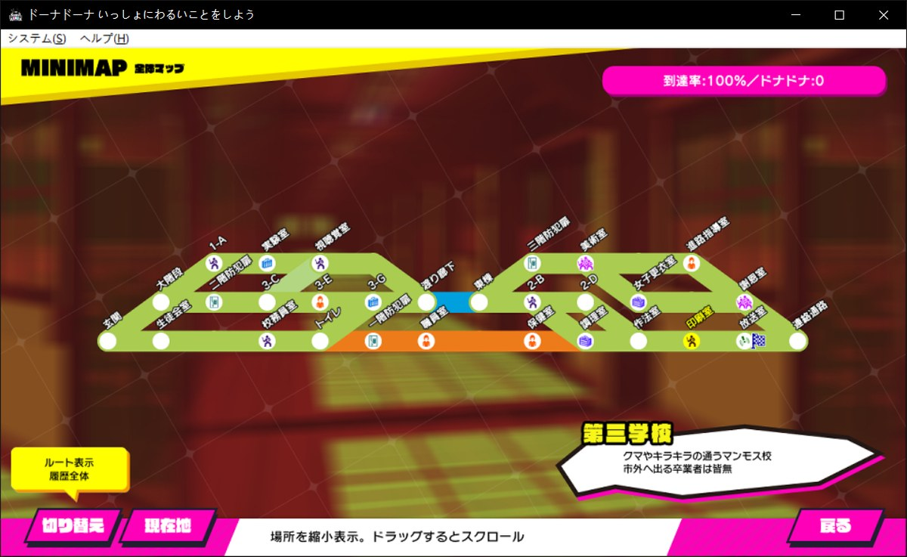
DAY 39 / 40 / 43 / 44
- DAY 39：【日入 3.5 万】。同时触发了第六位特殊女角色的，可以去 ASP。
- DAY 40：【一次派遣赚 15 万以上】。这段时间速通党可以趁机抓个处女人材。期间第七个特殊妹子在裏ジオ，第八个在芽生寮。
- DAY 43：【让处女人材接客】。
- DAY 44：【通关花霞祭】。商店刷出【ビッグパンガム】可以买一下——买了就能去地图上那些之前走不了的 offline gate 处。注意：全灭可收战败 CG。注意 2：想避开的，一定要走上面的路到驻车场口出去。第二个红感叹号有小 boss 战，注意补给。
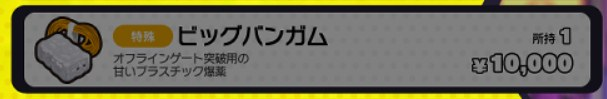
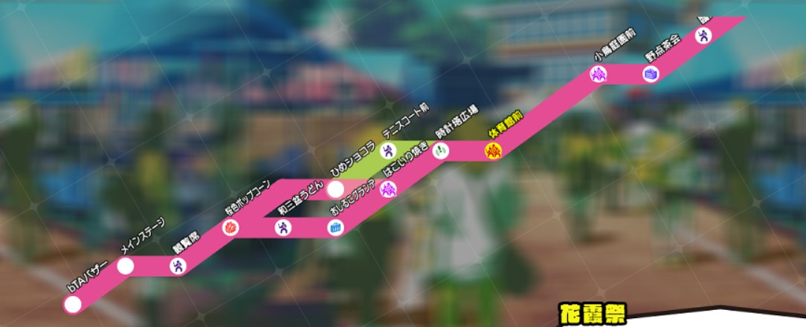
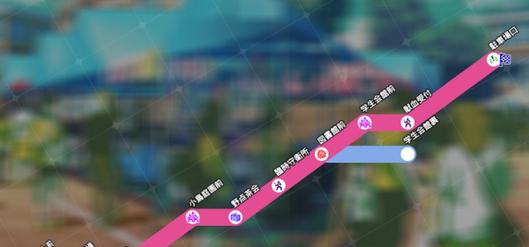
DAY 45 / 46
- DAY 45：【随便去个地方通关】。通关后会有一场 boss 战，7 万血左右。
- DAY 46：【去商店】然后【通关めぐみ通り】。注意：晚一天去可收一张 CG，想避开的当天去。走到红感叹号处即可，有一场难一点的杂兵战。
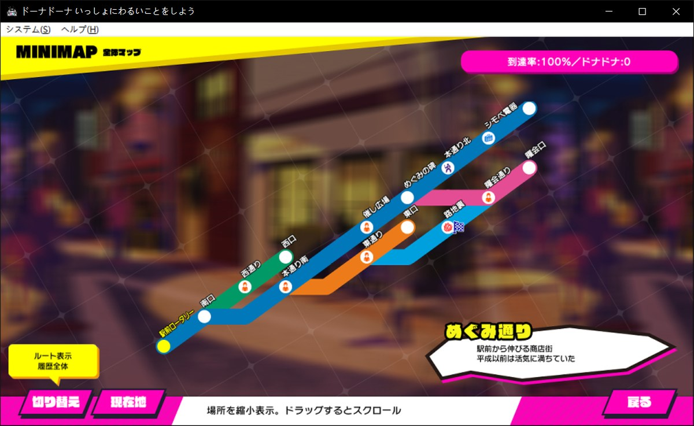
DAY 47 / 48
- DAY 47：【日入 4 万】。
- DAY 48：【通关アンエピク】。老规矩，晚一天有 CG。另外这里可以刷 5 级素材。之后的红感叹号处有一场 boss 战，4 万血左右。
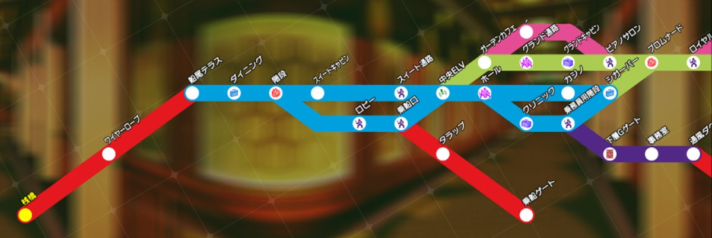
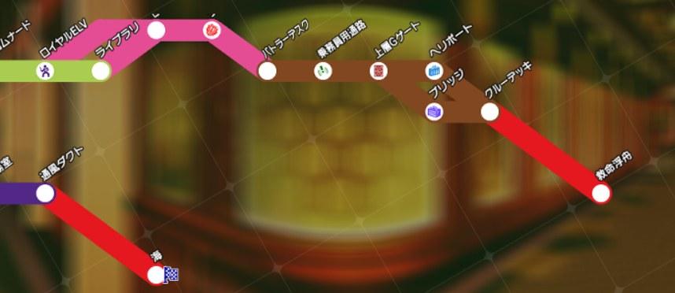
DAY 49～56 / 58
- DAY 49：【日入五千】（这应该没人完不成吧……）。
- DAY 50：【日入 1 万】。
- DAY 51：【随便通关哪里】。
- DAY 52：【通关情報工学科棟】。
- DAY 53：【日入 4.5 万】。
- DAY 54：【通关アンエピク】。这次要走下面那条 G 门，有 boss 战，10 万血左右。
- DAY 55：【连续接客 4 人】。
- DAY 56：【一次派遣赚 20 万】。这里有个取巧的办法：第八个特殊妹子（芽生寮那个）的任务会固定刷一个派遣目标，只要派这个妹子就是5 项条件全满足，轻松拿到 50 万，还能顺便拿妹子 CG。这期间触发第九个特殊妹子，去仕山医院捕获。
- DAY 58：【通关中央线】。注意：战败有 CG。
DAY 59 / 60 / 61 / 68
- DAY 59：【没啥要做的】（真的是这样，随便干什么），ToDo 是
なし。 - DAY 60：同上，同时这里会决定你走哪个结局。
- DAY 61：【派遣珀尔诺给山内知佐文】。注意：想避开相应事件的，不要让珀尔诺去接客，能派遣就直接派遣；收集的则让珀尔诺去接客之后派遣，有 CG。原帖提到一个有趣的点：二周目时派商店买来的珀尔诺也能完成任务。原帖作者因为已经派过人了，所以要等下一个派遣期，条件符合的直接派遣。这期间第十个特殊妹子在産業プラザ，第十一个在芽生寮，第十二个在サンホー工場，第十三个在码头。
- DAY 68：【去商店】然后【通关けもの道】。全员败北有 CG。这里开始就要打最终 BOSS 战了，还有没做完的事就先做完再打。走到终点会进入第二张地图；红感叹号处有 BOSS 战，20 万血左右；走到尽头还会有一次 boss 战。
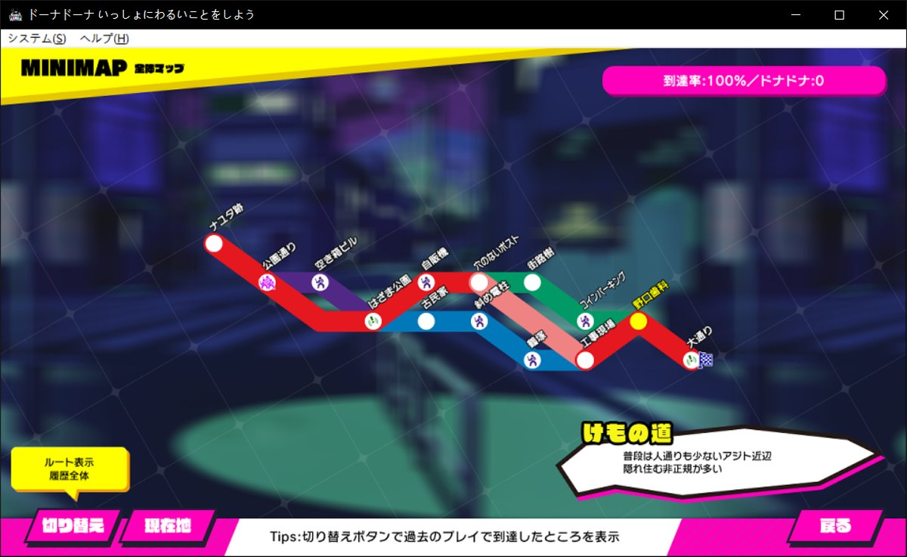
终盘
原帖最后贴了三张终盘地图：第三张地图，没探索完，尽头处打最终 BOSS，血很厚——没好好培养角色跟好感的话要吃苦头。打完后进结局。
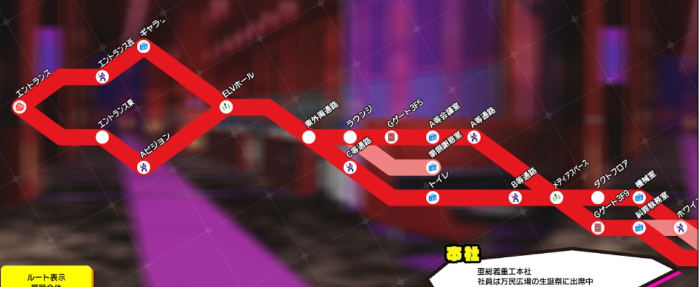
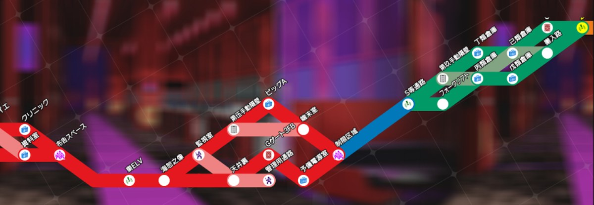
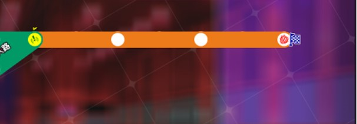
原帖的缺口
- 抽楼：第 15 楼楼主自己写「完了，被度娘制裁了一直抽楼」，从 DAY 13 之后到 DAY 23 之间丢了一整段。
- 补楼：楼主随后用截图补了被抽掉的内容，原件见下一节。因此本页的 DAY 9～11、15～17、29～30、47～48、59～68 有内容，而 DAY 18～22 仍然缺失。
- 原帖本身跳过了几天（DAY 27、32、41、42、57 都没写），这不是本页遗漏。
- 本页的 DAY 9～11、15～17、29～30、47～48、59～68 是从补楼截图转写的；其余转写自楼层正文。
补楼原件
原帖用这几张截图补出被抽掉的内容。它们同时也是上面 DAY 15～17、59～68 等段的转录来源。
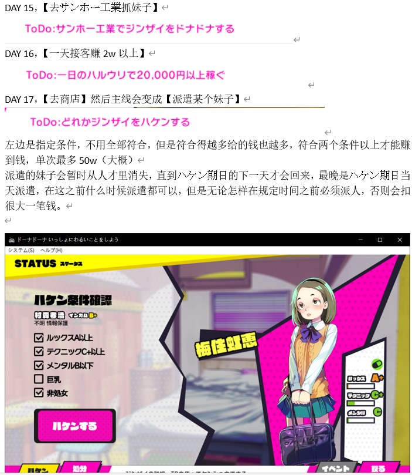
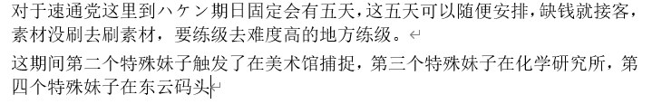
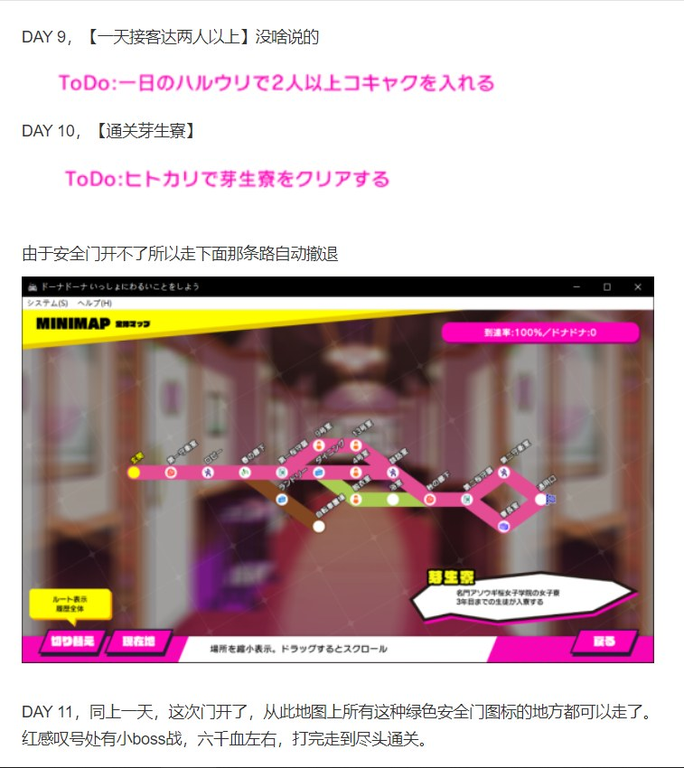
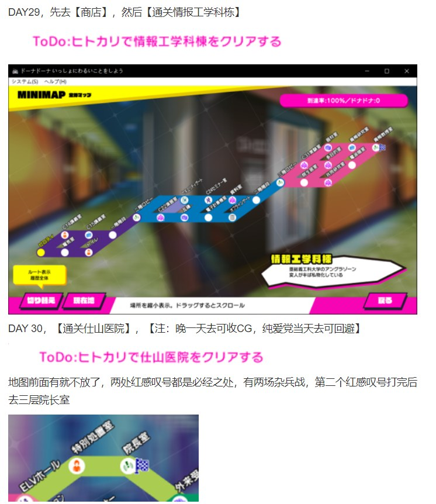
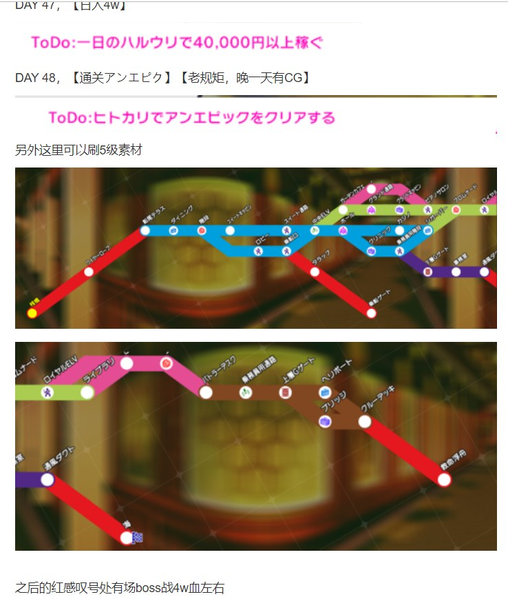
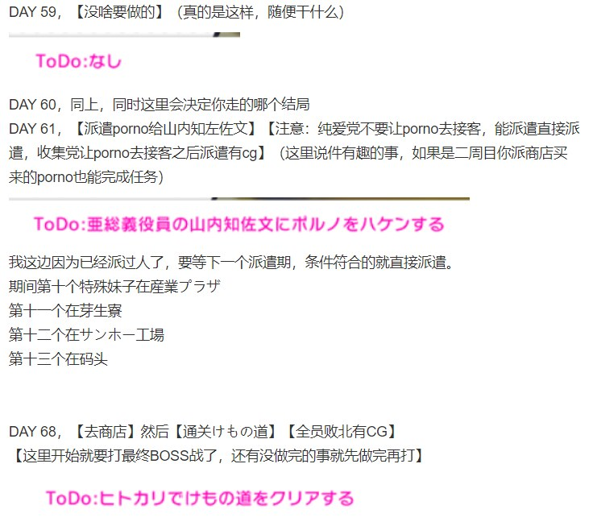
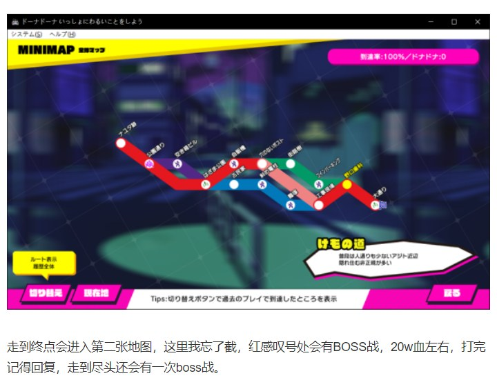
内容出处
- 原帖：百度贴吧「多娜多娜来一起做坏事吧」吧 《【无剧透】全主线简易流程攻略》，楼主 辉弥沙耶，2020-12-11 首发、2020-12-12 补更。本页按其楼主楼层整理。
- 原帖后半段（第 34～47 楼）的「特殊妹子事件达成条件」与站内 特殊人才任务条件 是同一份内容，本页不重复收录。
- 原帖的粉色 ToDo 标签截图未收录：那些横条是游戏内 ToDo 的日文原文，内容与正文里【】标出的目标一一对应，本页已逐日转写；完整的 ToDo 清单见 全话流程表（第 1～59 话）。
- 中性化处理：原帖有若干标签指向成人向素材，本页统一改写为中性表述，不影响推进流程本身的信息：
原帖写法 本页写法 牛头人事件 坏结局事件 ntr 的 CG 坏结局 CG 处○ 处女人材 porno 珀尔诺
- 内容边界：本站对成人向游戏只收系统、数值与分支资料，不写成人类素材的收集指引，因此本页只保留推进流程所需的信息。
- 页面插图为贴吧全尺寸原图（贴吧移动版页面只给 250px 缩略图，本页按原图抓取）。